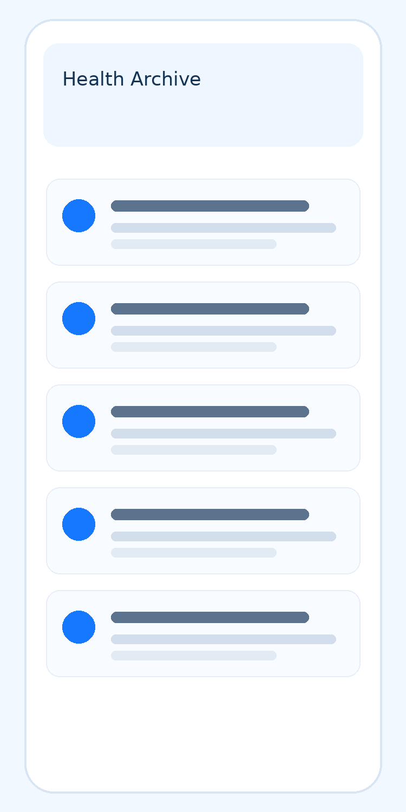
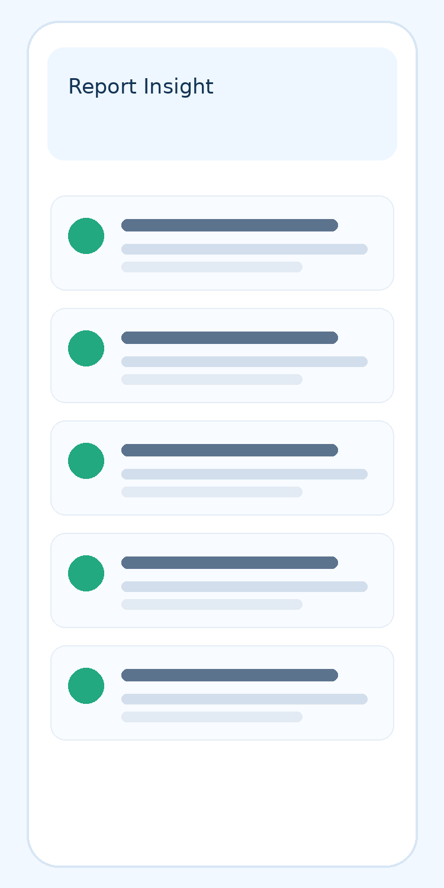
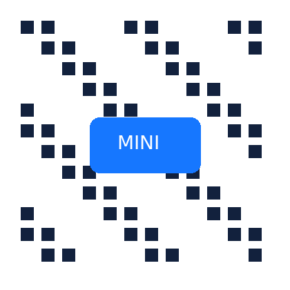

健康咨询问答
围绕日常症状、用药疑问、慢病管理、儿童健康、孕产问题和就医准备，提供清晰、可继续追问的健康咨询体验。
好伴 AI 面向家庭健康管理，提供健康咨询、家庭档案、长期记忆、拍照解读、图片与 PDF 综合分析、多学科专家 AI 支持和多份体检报告趋势分析。在用户授权和可用资料范围内，帮助整理健康信息，为日常管理与就医沟通做好准备。



好伴 AI 将健康问答与家庭档案连接起来，在用户授权和可用档案范围内，辅助理解、整理与追踪健康信息。
围绕日常症状、用药疑问、慢病管理、儿童健康、孕产问题和就医准备，提供清晰、可继续追问的健康咨询体验。
根据用户授权，将对话、拍照、上传报告和体检解读中的可用信息自动整理到对应家庭成员档案，方便后续查看与补充。
在用户授权和可用档案范围内，参考基础情况、历史问题、报告指标与关注重点，为后续咨询提供上下文；不代表所有信息都会被完整或永久保存。
拍摄检查单、药盒、报告片段、皮肤状态或日常健康记录，AI 辅助提取信息、解释相关内容。图片解读不能用于确诊，识别结果需结合原始资料核对。
支持同时上传图片、PDF、检查报告、病历资料等多种材料，跨文件整合分析，减少用户自行查找和比对成本。
围绕多学科健康知识提供 AI 辅助，帮助用户理解常见健康问题、整理就医沟通要点。专家 AI 分身不代表专家本人实时接诊，也不替代诊断与治疗。
好伴 AI 提供多学科专家 AI 支持，辅助健康知识理解、报告阅读和就医准备。专家 AI 分身属于 AI 辅助能力，不代表专家本人实时接诊；实际诊断与治疗由具备资质的专业人员负责。
专家 AI 分身围绕专业知识与家庭健康管理场景提供信息辅助，帮助理解问题、准备就医沟通。具体学科与可用能力以产品实际开放范围为准，不等同于人工专家服务。
AI 分身辅助整理问题、解释报告内容和准备复诊材料。AI 输出需结合原始资料核对，涉及个体诊疗的问题应由专业人员判断。
主任医师，妇产科方向。此处为专家信息展示，相关 AI 分身用于知识理解与沟通准备，不代表专家本人实时接诊。
教授 / 主任医师，泌尿科与生殖医学方向。此处为专家信息展示，相关 AI 分身辅助整理专科问题，不代表专家本人实时接诊。
围绕备孕、孕期、产后恢复与妇科咨询，AI 分身辅助理解健康知识、整理资料与提问要点；个体评估和诊疗安排仍由专业人员负责。
主任医师，妇产科方向。此处为专家信息展示，相关 AI 分身用于知识理解与沟通准备，不代表专家本人实时接诊。
围绕孕周记录、产检报告、产后恢复与新生儿护理提出问题，获得信息整理与知识解释，便于进一步向专业人员咨询。
围绕泌尿与生殖健康问题，AI 分身辅助整理症状描述、理解检查相关知识和准备就医提问，不代替医生作出诊断或治疗决定。
教授 / 主任医师，泌尿科与生殖医学方向。此处为专家信息展示，相关 AI 分身辅助整理专科问题，不代表专家本人实时接诊。
体检指标异常解读、检查报告理解、就诊前的症状整理，帮助用户与医生更高效地沟通。
围绕肿瘤相关知识，辅助阅读报告、整理随访资料与待咨询问题。筛查、治疗及康复安排应由专业人员结合具体情况确定。
肿瘤专科经验共建方向之一。相关 AI 能力用于知识理解和资料整理，不代表医院或专家本人提供实时诊疗。
支持多学科健康知识咨询与资料理解，具体学科、专家分身及服务范围以产品实际开放内容为准。
好伴 AI 旗下 · 面向个人和家庭的多年体检报告联合解读服务
历年报告分散保存，往往不便查找和对照。智三多将多份报告中的可用信息按时间整理，在核对指标名称、单位和参考区间等条件后辅助比较，汇总变化记录与待确认问题，供用户与专业人员沟通。
按年份整理年度体检、复查与专项检查资料，对具备可比条件的指标进行对照，辅助查看已上传记录中的变化。
多学科 Agent 是 AI 智能体，按不同学科视角辅助整理报告内容与问题线索，再汇总供参考；不等同于人工专家会诊。
结合用户授权提供的年龄、病史、用药及其他可用资料，整理待补充信息与就医沟通要点；复查和干预安排由专业人员确定。
虚构流程示例：按年份归集资料。下方连线仅为整理步骤示意，不表示医学指标或风险变化。
从整理已有资料、汇总待确认线索，到准备沟通清单、补充后续报告，智三多辅助衔接资料阅读与持续记录，不代替医学评估。
AI 核对指标名称、单位与参考区间等可比条件，整理跨年份记录；多学科 Agent 辅助汇总信息，不等同于人工专家会诊。
结合可用资料汇总报告中的异常标记、变化记录与缺失信息，供专业人员核实；不据此预测疾病或作出风险结论。
将资料要点与待确认问题整理成就医沟通清单。是否复查、检查项目及诊疗优先级由专业人员判断。
上传新报告后，在用户授权和可用档案范围内继续对照、更新记录；变化的医学意义及治疗效果由专业人员评估。
以下三个场景均为虚构流程示例，并非真实案例或脱敏案例，仅说明资料整理方式，不包含医学结论。
虚构场景：整理个人历年体检资料
形成按年份排列的资料摘要和待确认问题，方便查阅与就医沟通，不作风险或疾病判断。
虚构场景：就医前汇总报告与记录
形成资料摘要与沟通清单，供专业人员查看；不推断隐藏病程，也不排列治疗优先级。
虚构场景：监护人整理儿童健康资料
形成该成员的资料时间线，方便家长补充记录与咨询医生；不自动预警疾病或推断病因。
带上本人或家人的历年体检报告、复查报告与检查资料，体验一次多年联合解读。留下联系方式，我们会与你确认体验方式。
在用户授权范围内，将可用解读结果整理到家庭健康档案。后续咨询与报告对照可参考已有记录，仍需补充缺失信息并确认最新情况。
以高频健康问题触发使用，让用户自然进入服务。
图片、PDF、报告、病历多材料融合分析，形成结构化健康信息。
在授权范围内整理对应成员的可用资料，逐步积累健康记录。
在授权与可用档案范围内参考历史记录，减少后续咨询中的重复整理。
本节看板与三个场景均为虚构的资料整理流程示例，并非真实或脱敏案例，不展示医学指标、疾病预测或诊疗结论。AI 输出仅供信息理解与沟通准备，不替代诊疗；实际诊断与治疗由具备资质的专业人员负责。如有健康问题，请及时就医。
移动端 App、小程序与鸿蒙端提供不同使用入口。扫码后按设备环境和页面引导使用，具体功能、支持设备及数据同步范围以各端实际版本为准。
扫码进入 H5 下载入口，按 iOS 或 Android 设备提示完成下载。可体验问答、档案、报告解读、拍照分析和长期记忆，具体以当前版本及授权范围为准。

无需安装，适合快速咨询、家人转发、临时查看报告解读和轻量化健康管理。
适配鸿蒙生态，扫码后按引导完成安装，延续移动端核心能力，方便用户在手机、平板等多设备场景下持续记录、查看和管理家庭健康信息。
好伴 AI 以高频健康问答为入口，以家庭健康档案和长期记忆为底座，将体检报告、病历资料、日常咨询、拍照识别和专家 AI 分身连接起来，形成面向个人与家庭的持续健康管理能力。
儿童、父母、孕产、慢病、体检、用药与就医准备，都是家庭日常会反复出现的健康问题。
在用户授权范围内，将问答、上传、拍照和报告解读中的可用信息整理到家庭档案，便于持续查看和补充。
围绕长期记忆和多报告趋势分析，好伴 AI 可承接更多医疗健康服务连接与家庭管理场景。
提交后由顾问与您联系，围绕场景梳理、能力匹配与接入方式进一步沟通，具体安排以双方确认为准。